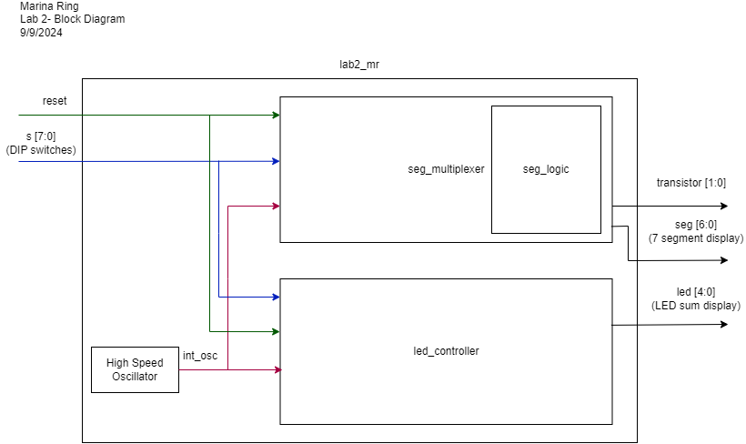
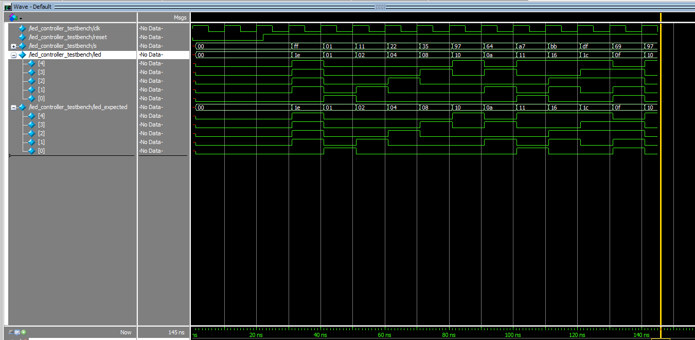

Lab 2: Multiplexed 7-Segment Display
Introduction
This lab introduced us to managing I/O on our FPGA by turning the single seven segment display from Lab 1 into a dual seven segment display! Instead of doubling the amount of I/O pins used to program the display, we were tasked with implementing time-multiplexing to control the two displays. This lab was important in teaching us how to properly manage clocks and ensuring we followed synchronous sequential design principles even as our hardware becomes more complex. See the E155 Lab 2 Page for a more detailed overview of the specifications and instructions for this lab.
All code written for this lab can be found on my E155 Lab 2 Repository on Github.
Setup and Circuitry
 A picture of my completed circuit!
On the left is a picture of my final circuit setup, the circuit diagram for this circuit is shown at the bottom of this section. Two transistors were used to carry out
the time-multiplexing as a signal was sent to each controlling which display received power at any moment. Since the gate of the transistors were
connected to I/O on the FPGA, it was important to ensure there was not too much current being drawn from the FPGA pins. I used the following expression
to calculate resistor values. A Beta value of 60 was found from the datasheet for a 2N3906 Transistor.
\[ R = (V_{cc} - V_{LED}) / I_{collector} / Beta\]
\[ R = (3.3V - 0.7V) / 0.07A / 60 = 2.2kOhms\]
A picture of my completed circuit!
On the left is a picture of my final circuit setup, the circuit diagram for this circuit is shown at the bottom of this section. Two transistors were used to carry out
the time-multiplexing as a signal was sent to each controlling which display received power at any moment. Since the gate of the transistors were
connected to I/O on the FPGA, it was important to ensure there was not too much current being drawn from the FPGA pins. I used the following expression
to calculate resistor values. A Beta value of 60 was found from the datasheet for a 2N3906 Transistor.
\[ R = (V_{cc} - V_{LED}) / I_{collector} / Beta\]
\[ R = (3.3V - 0.7V) / 0.07A / 60 = 2.2kOhms\]
I also made sure that the green LEDs I used to display the sum of two numbers had the appropriate current-limiting resistors. I used Ohm's Law again, considering a 2V
voltage drop across one LED.
\[ R = (V_{cc} - V_{LED})/ I \]
\[ R = 3.3V - 2V/ 0.01A = 130 Ohms \]
The circuit schematic on the left details the Upduino pins I used to power the display and LEDs. Since the MAN6410 is a common anode display, 3.3V is supplied at the
anode and each pin acts as a cathode. To turn a segment on, a pin is set to low or 0 and so current can flow down that path. To turn a segment off, the pin is
set back to high or 1. The pin assigments are displayed in the cirucit diagrams below.
Software and Verification
 A block diagram model for this system. On the left is a block diagram visualizing the Verilog modules that I used in this lab and their inputs, outputs, and connections. I separated the combinational logic for controlling the LEDs and for controlling the 7 segment display in order to better be able to test their functions individually. By modularizing into these two blocks, I was able to isolate errors within each block of combinational logic.
A photo of the oscilloscope measuring the blinking LED signal. Note in the bottom left corner, a frequency measurement of 2.44 Hz! I wrote a testbench for each module with corresponding test vectors. For the led_logic module, the test vectors corresponded to each entry in the truth table shown here Additionally, I also used an oscilliscope to verify the frequency of the blinking LED. As you can see in the photo on the left, I successfully produced a signal of approximately 2.4 Hz. The oscilliscope output is shown to the right and the successful ModelSim simulation result is shown below. For the seg_logic module, the test vectors corresponded to each possible DIP switch input or all 4 digit binary numbers. The successful ModelSim simulation is shown in the last image below.
 The ModelSim waveform output of the seg_logic testbench
 The ModelSim waveform output of the seg_logic testbench
The ModelSim waveform output of the seg_logic testbench
After testing, I successfully compiled and uploaded the Verilog modules to the Upduino. The design meets all of the requirements.
This lab took me 19 hours in total.